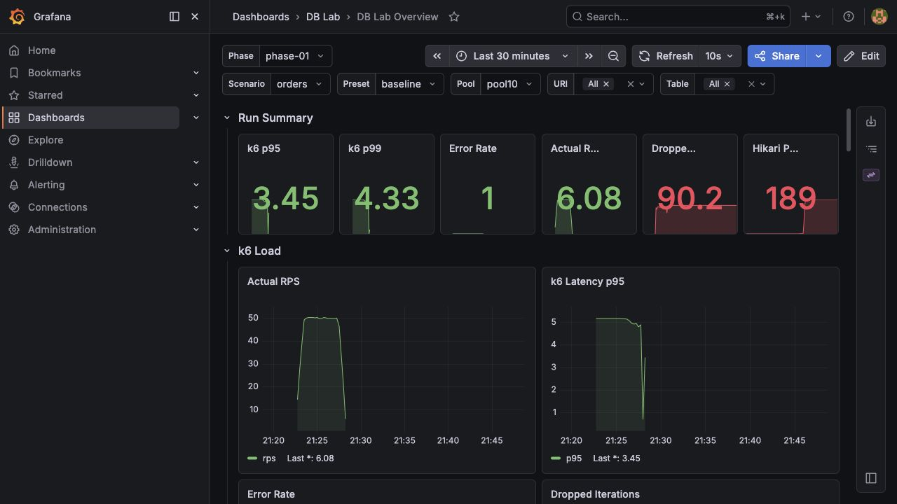
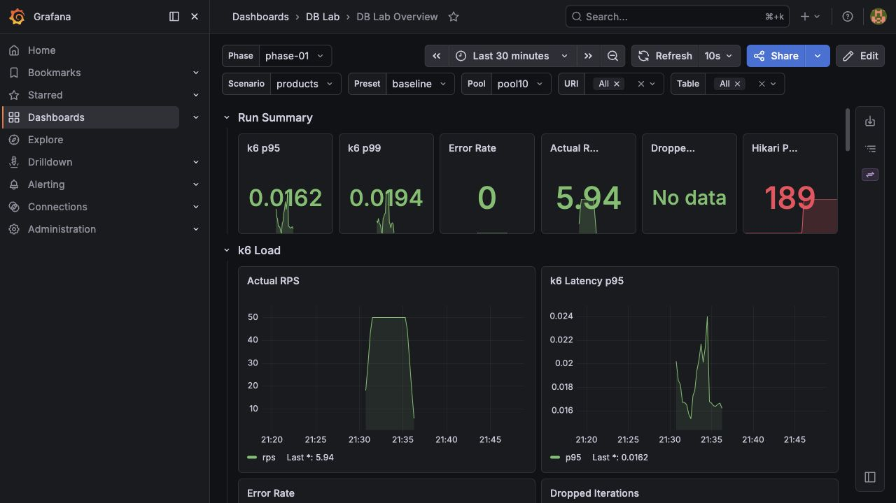
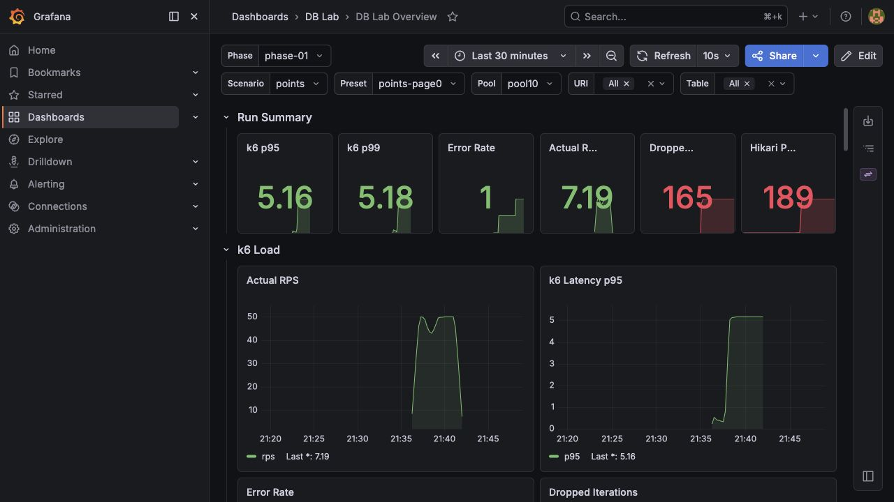
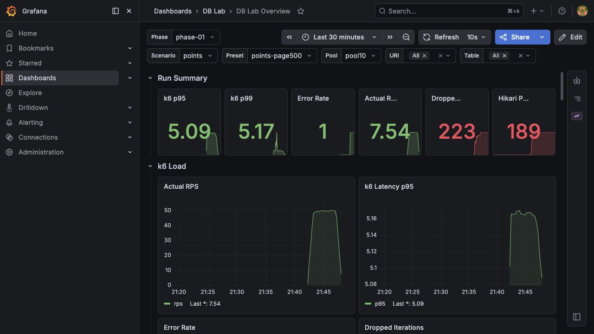

반복적인 order_item 단건 조회가 폭증하고 Hikari pool이 포화된다.
결론
Phase 1의 나이브 구현은 이후 최적화 실험의 기준선 역할을 충분히 한다.
50 rps에서는 안정적이지만, 인덱스 전 상품 필터 쿼리의 비교 기준선을 확보했다.
얕은 페이지도 count(*) query 때문에 이미 불안정하다.
deep offset 비용이 크게 증가하며 거의 모든 요청이 실패한다.
다음 Learning Phase 연결
Phase 2에서는 products의 인덱스 설계와 실행계획 전환을 검증한다.
이후 Phase 3에서는 orders의 N+1 제거, Phase 7에서는
points의 offset pagination 제거를 비교하면 된다.
실행 조건
동일 조건 재현과 이후 Phase 비교를 위한 Measurement Condition이다.
| Item | Value |
|---|---|
| Date | 2026-05-17 |
| Seed preset | loadtest |
| Spring profile | pool10 |
| k6 phase label | phase-01 |
| k6 pool label | pool10 |
| Dashboard | DB Lab Overview |
| Table | Rows |
|---|---|
users |
10,000 |
product |
100,000 |
orders |
500,000 |
order_item |
1,000,000 |
point_history |
2,000,000 |
delivery_tracking |
1,000,000 |
지표 해석 기준
k6, connection pool, SQL snapshot을 함께 볼 때 사용하는 기준이다.
| Metric | 해석 |
|---|---|
http_req_duration p95 |
요청 95%가 이 시간 이하로 끝났다는 뜻이다. 이번 k6 timeout이 5초라서 p95가 5s이면 실제 지연이 timeout 상한에 닿았다는 의미다. |
http_req_failed |
k6 관점의 실패율이다. timeout, 5xx, expected response 실패가 여기에 반영된다. |
dropped_iterations |
목표 arrival rate를 맞추지 못해 실행하지 못한 iteration 수다. 부하 주입 자체가 밀렸다는 신호다. |
Hikari active |
사용 중인 DB connection 수다. pool10에서 10에 가까우면 pool 상한까지 사용 중이다. |
Hikari pending |
connection을 기다리는 thread 수다. 0보다 크면 connection pool 대기가 발생한다. |
pg_stat_statements.calls |
같은 SQL shape가 실행된 횟수다. N+1은 여기서 반복 호출로 드러난다. |
pg_stat_statements.mean_exec_time |
DB 내부에서 SQL 한 번이 평균적으로 걸린 시간이다. API latency보다 병목 원인을 더 직접적으로 보여준다. |
pg_stat_statements.total_exec_time |
전체 DB 시간을 가장 많이 쓴 SQL을 찾는 데 사용한다. |
전체 k6 결과
같은 pool10 조건에서 시나리오별 실패율과 timeout 징후를 비교한다.
| Scenario | Preset | Requests | RPS | Failed | p95 | Dropped |
|---|---|---|---|---|---|---|
orders |
baseline |
14,844 | 48.67/s | 100.00% | 5s | 157 |
products |
baseline |
15,001 | 50.00/s | 0.00% | 17.24ms | 0 |
points |
points-page0 |
14,835 | 48.64/s | 60.44% | 5s | 166 |
points |
points-page500 |
14,766 | 48.41/s | 99.16% | 5s | 235 |
상황별 해석
각 API의 병목을 SQL 호출 수, 평균 실행 시간, connection pool 상태로 분리해서 본다.
Orders Baseline
N+1 · Pool SaturationPHASE=phase-01 POOL=pool10 ./k6/run.sh orders baseline prometheus
Requests
14,844
RPS
48.67/s
Failed
100.00%
p95
5s
Hikari pending max
189
| Query | Calls | Mean | Total |
|---|---|---|---|
order_item where order_id = ? |
36,631 | 87.72ms | 3,213,308.15ms |
orders where user_id = ? |
110 | 78.42ms | 8,626.39ms |
해석
ordersAPI는 baseline 부하를 버티지 못한다.- p95가
5s인 것은 k6 timeout 상한에 닿았다는 뜻이다. - Hikari active가 pool 상한인 10까지 차고 pending이 189까지 올라갔다.
- 핵심은 connection pool 크기보다 요청 하나가 너무 많은 SQL을 발생시키는 N+1 구조다.

{kind=link}
Products Baseline
Index BaselinePHASE=phase-01 POOL=pool10 ./k6/run.sh products baseline prometheus
Requests
15,001
RPS
50.00/s
Failed
0.00%
p95
17.24ms
Dropped
0
| Query | Calls | Mean | Total | Rows |
|---|---|---|---|---|
product where category_id = ? and status = ? |
15,001 | 7.90ms | 118,489.64ms | 2,508,501 |
해석
productsAPI는 현재 50 rps에서는 안정적으로 동작한다.- p95가 17.24ms이고 실패율이 0%라서 사용자 관점의 증상은 아직 크지 않다.
- 상품 필터 SQL은 15,001회 실행되었고 총 250만 개 이상의 row를 반환했다.
- Phase 2에서 Seq Scan, Index Scan, Index Only Scan 전환을 검증하기 좋은 대상이다.

{kind=link}
Points Page0
Count Query CostPHASE=phase-01 POOL=pool10 ./k6/run.sh points points-page0 prometheus
Requests
14,835
RPS
48.64/s
Failed
60.44%
p95
5s
Dropped
166
| Query | Calls | Mean | Total | Rows |
|---|---|---|---|---|
count(*) from point_history where user_id = ? |
13,273 | 186.30ms | 2,472,750.61ms | 13,273 |
point_history where user_id = ? fetch first ? rows only |
13,283 | 3.12ms | 41,384.08ms | 265,660 |
해석
- 얕은 page0도 50 rps에서 안정적이지 않다.
- 실제 page0 데이터 조회 SQL은 평균 3.12ms로 빠르다.
- Spring Data
Page응답을 만들기 위한count(*)query가 평균 186.30ms로 비싸다. - page0의 병목은 offset 자체보다 count query와 connection 점유 시간이다.

{kind=link}
Points Page500
Deep OffsetPHASE=phase-01 POOL=pool10 ./k6/run.sh points points-page500 prometheus
Requests
14,766
RPS
48.41/s
Failed
99.16%
p95
5s
Dropped
235
| Query | Calls | Mean | Total | Rows |
|---|---|---|---|---|
point_history where user_id = ? offset ? rows fetch first ? rows only |
5,711 | 274.68ms | 1,568,719.47ms | 0 |
count(*) from point_history where user_id = ? |
5,704 | 269.47ms | 1,537,065.92ms | 5,704 |
해석
- page500은 deep offset 병목이 명확하다.
- page0 main query 평균 3.12ms와 비교하면 page500 offset query 평균 274.68ms는 약 88배 느리다.
- 반환 row가 0인데도 깊은 offset까지 건너뛰는 비용을 지불했다.
- 실패율 99.16%와 dropped iteration 235는 deep page 요청을 거의 처리하지 못한다는 뜻이다.

{kind=link}
문제 분류
Baseline에서 드러난 병목과 다음 비교 Phase를 연결한다.
| Problem | Evidence | Next Phase |
|---|---|---|
| N+1 / 반복 단건 조회 | order_item where order_id = ? 36,631 calls |
Phase 3 |
| Hikari pool 고갈 | active max 10, pending max 189 | Phase 3, pool 비교 실험 |
| 상품 필터 인덱스 전 기준선 | product filter 15,001 calls, 118,489.64ms total | Phase 2 |
| Page count query 비용 | page0 count query mean 186.30ms | Phase 7 또는 별도 pagination 개선 |
| Deep offset 비용 | page500 offset query mean 274.68ms | Phase 7 |
Phase 2 진입 판단
Phase 1은 완료된 Baseline으로 보고 다음 Learning Phase로 넘어갈 수 있다.
- 세 API의 실패 양상 확인 실제 부하에서 어떤 방식으로 깨지는지 확인했다.
- Evidence 저장 완료 k6 summary, SQL snapshot, Grafana screenshot이 저장되어 있다.
- Phase 2 대상 명확 상품 검색 API는 Phase 2 인덱스 실험의 직접 대상이다.
- 이후 Phase 기준선 확보 주문 목록과 포인트 내역의 병목도 이후 Phase에서 비교할 기준선으로 남겼다.
Phase 2 주의점
products 쿼리만 보고 끝내지 말고
EXPLAIN ANALYZE로 실제 실행계획을 반드시 기록해야 한다.